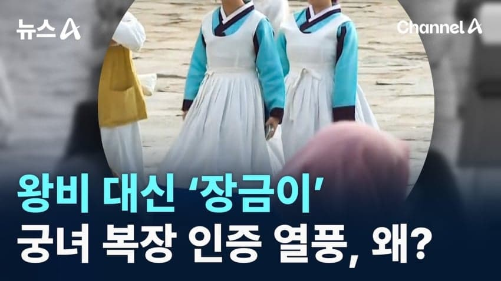
요즘 고궁에서 인기 있는 한복, 왕비나 중전의 화려한 의복이 아니라, 수라간 궁녀 복장이라고 함
벌써 20년도 더 된 드라마, 장금이가 왜 대세가 됐을까?
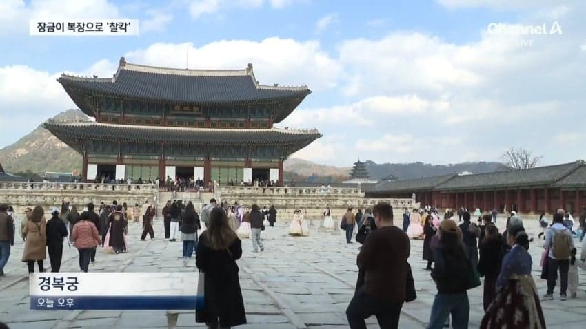
서울의 대표적 관광지 경복궁
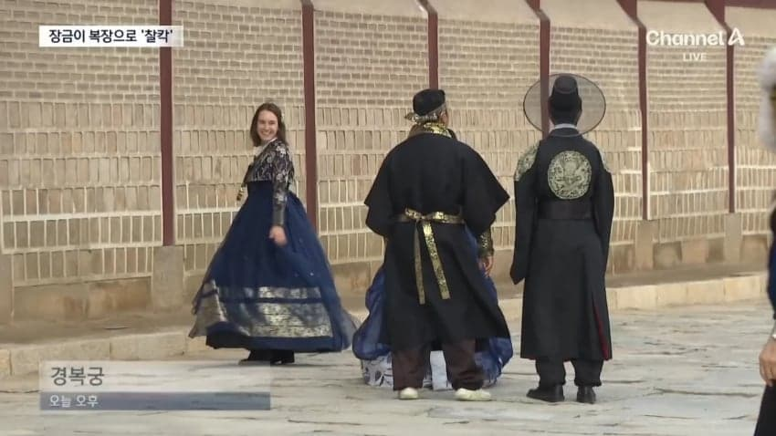
형형색색의 한복을 입은 외국인들이 잔뜩 보이는 것도 이제 자연스러운 풍경이 됐음
그런데 이들 사이로 소탈한 한복에 흰 앞치마를 두른 젊은 여성들이 지나가고 있음
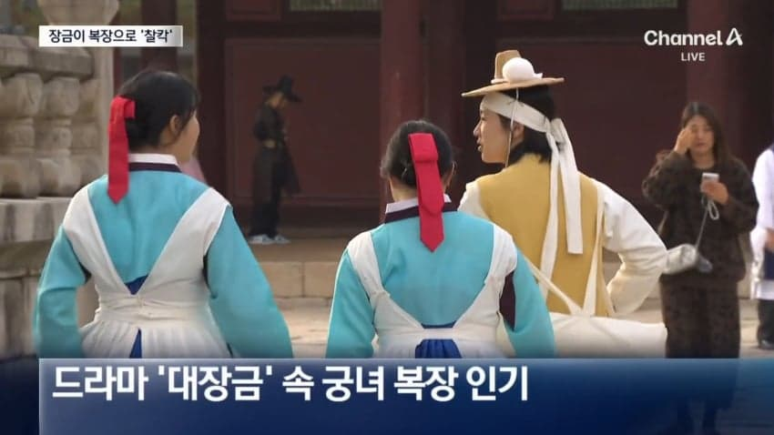
드라마 '대장금' 속 수라간 궁녀 복장으로 사진을 찍으러 온 것
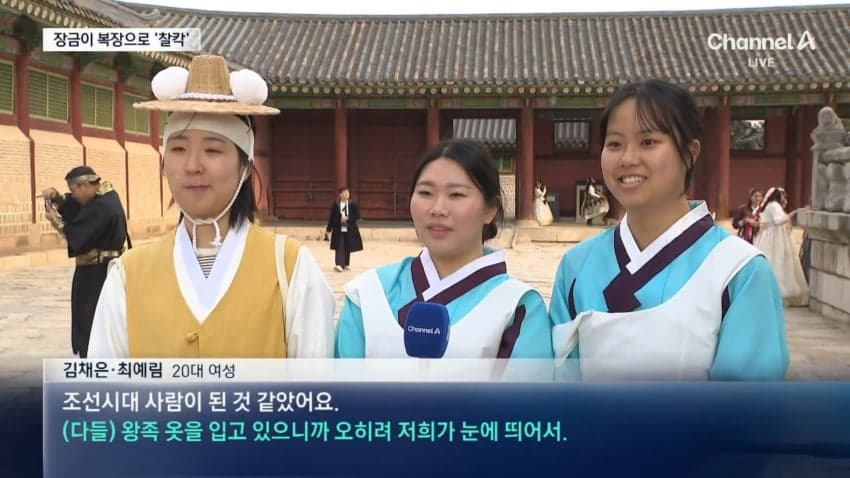
고궁을 배경삼아 실제 궁녀처럼 종종걸음으로 이동하는 모습을 영상으로 담아 SNS에 올리기도 함
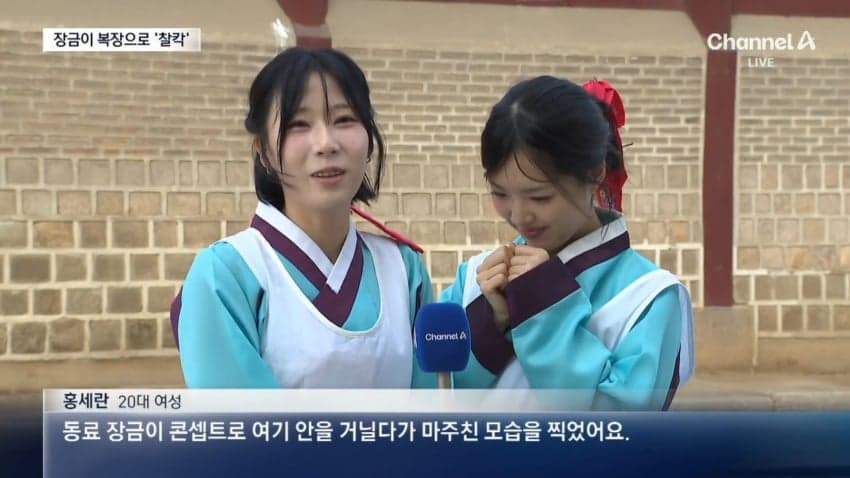
기자도 장금이 한복을 빌려 입어봤다는데
질끈 묶은 흰색 앞치마까지 두르니 영락없는 수라간 궁녀의 모습이라는 자평임
대장금 드라마를 본 적이 없는 경우가 많은 젊은 층들이 왜 이런 복장으로 시간여행을 즐기는 걸까?
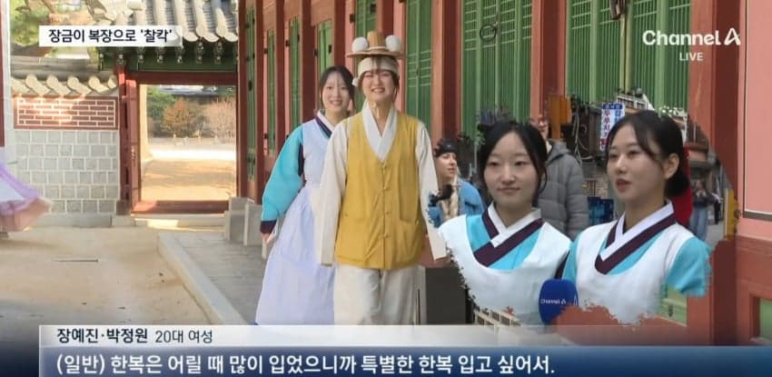
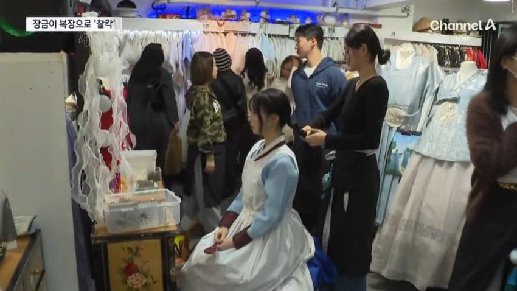
이런 손님들이 늘면서 고궁 근처 한복 대여점 풍경도 달라졌음
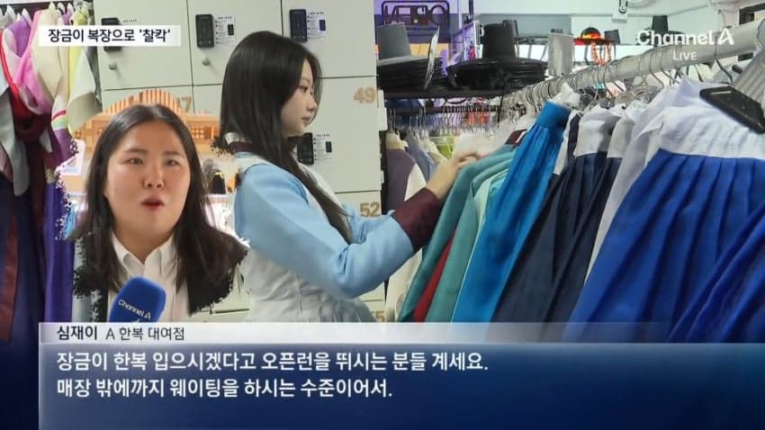
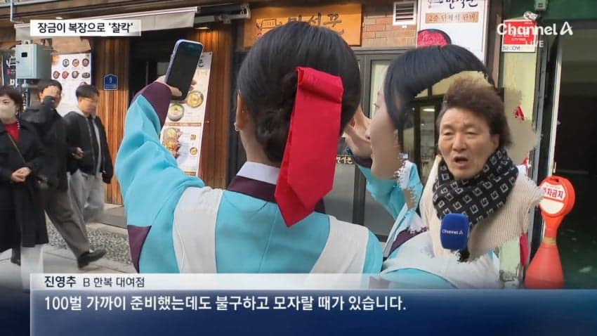
전통도 놀잇감으로 소화해 내는 청년들의 상상력이 한복의 재발견으로 이어지고 있다는 평가임
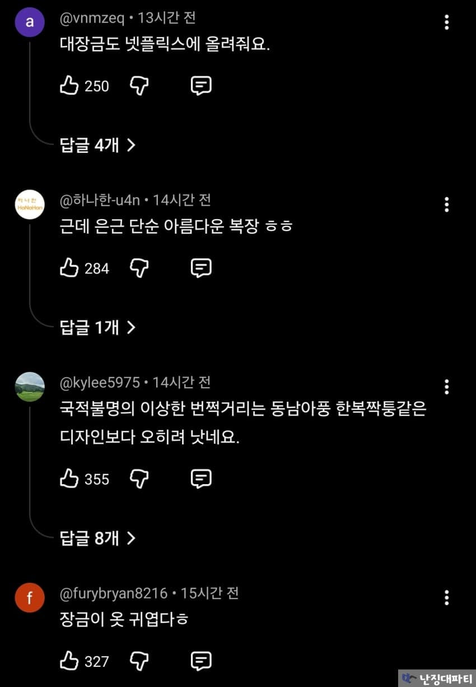
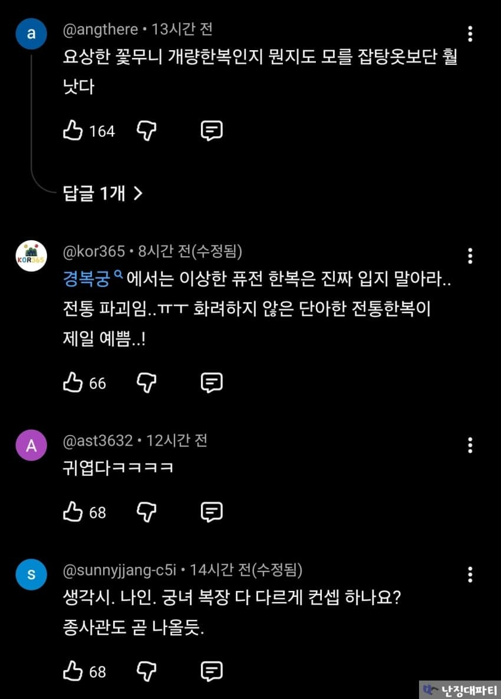
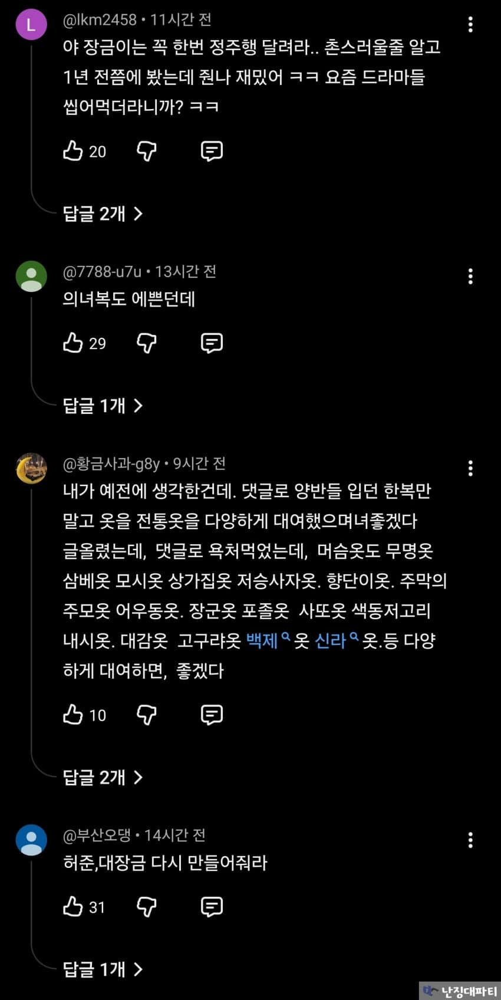
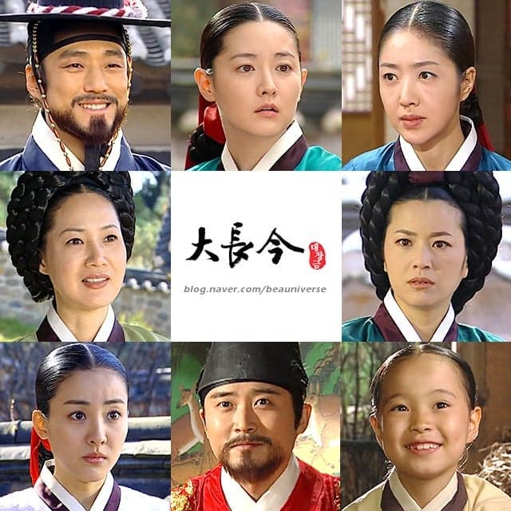
대장금 옷만 입지 말고 이참에 드라마도 한 번 봐!
댓글
수집 당시 댓글 216개
· ㅇㅇ · 11.28 16:41:51
ㅇㅇ · 11.28 05:08:25
ㅇㅇ · 11.28 05:21:49
ㅇㅇ · 11.28 05:37:02
ㅇㅇ · 11.28 05:43:03
통붕이 · 11.28 06:06:29
ㅇㅇ · 11.28 06:15:32
ㅇㅇ · 11.28 06:33:16
ㅇㅇ · 11.28 06:34:41
ㅇㅇ · 11.28 06:35:59
· 뭐하냐 · 11.28 06:56:23
· ㅇㅇ · 11.28 10:42:46
풀세데이션 · 11.28 06:40:10
ㅇㅇ · 11.28 06:42:08
· 공정성장 · 11.28 07:38:21
· ㅇㅇ · 11.28 10:25:25
ㅇㅇ · 11.28 06:44:29
ㅇㅇ · 11.28 06:53:24
ㅇㅇ · 11.28 06:54:48
뭐하냐 · 11.28 06:55:43
ㅇㅇ · 11.28 06:56:07
ㅇㅇ · 11.28 07:07:22
ㅇㅇ · 11.28 07:10:06
Doll · 11.28 07:11:12
ㅇㅇ · 11.28 07:15:07
ㅇㅇ · 11.28 07:15:16
ㅇㅇ · 11.28 07:25:53
ㅇㅇ · 11.28 07:31:59
ㅇㅇ · 11.28 07:35:00
ㅇㅇ · 11.28 07:35:23
ㅇㅇ · 11.28 07:39:49
분분 · 11.28 07:42:02
ㅇㅇ · 11.28 07:42:42
ㅇㅇ · 11.28 07:50:19
ㅇㅇ · 11.28 08:00:17
ㅇㅇ · 11.28 08:05:43
ㅇㅇ · 11.28 08:06:11
· ㅇㅇ · 11.28 11:53:20
ㅇㅇ · 11.28 08:15:23
ㅇㅇ · 11.28 08:19:24
ㅇㅇ · 11.28 08:19:29
ㅇㅇ · 11.28 08:28:28
ㅇㅇ · 11.28 08:29:56
· 소설쟁이 · 11.28 09:08:55
· ㅇㅇ · 11.28 17:47:14
ㅇㅇ · 11.28 08:31:20
ㅇㅇ · 11.28 08:33:09
ㅇㅇ · 11.28 08:39:00
· 공정성장 · 11.28 09:53:24
· 공정성장 · 11.28 09:53:55
· 공정성장 · 11.28 09:55:12
ㅇㅇ; · 11.28 08:48:36
ㅇㅇ · 11.28 08:54:01
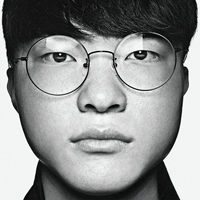
ㅇㅇ · 11.28 08:58:21
대 재명
ㅇㅇ · 11.28 08:59:19
ㄹㄹ · 11.28 09:15:44
Кошечка · 11.28 09:18:31
· 공정성장 · 11.28 09:35:09
· ㅇㅇ · 11.28 09:44:29
· ㅇㅇ · 11.28 10:09:17
ㅇㅂ · 11.28 09:21:21
· Кошечка · 11.28 09:41:50
ㅇㅇ · 11.28 09:30:51
ㅇㅇ · 11.28 09:38:34
원택이 · 11.28 09:42:23
ㅇㅇ · 11.28 09:56:05
· 공정성장 · 11.28 10:00:43
· Кошечка · 11.28 10:10:56
ㅇㅇ · 11.28 10:15:53
ㅇㅇ · 11.28 10:24:39
· ㅇㅇ · 11.28 10:25:11
ㅇㅇ · 11.28 10:27:13
ㅇㅇ · 11.28 10:54:05
ㅇㅇ · 11.28 11:11:53
ㅇㅇ · 11.28 11:18:59
· ㅇㅇ · 11.28 11:23:42
ㅇㅇ · 11.28 11:23:36
ㅇㅇ · 11.28 11:29:07
ㅇㅇ · 11.28 12:09:06
주소킹 · 11.28 12:23:57
· 주소킹 · 11.28 12:24:04
ㅇㅇ · 11.28 12:30:53
· ㅇㅇ · 11.28 15:40:15
ㅇㅇ · 11.28 12:32:24
ㅇㅇ · 11.28 12:36:29
ㅇㅇ · 11.28 12:51:40
ㅇㅇ · 11.28 13:09:01
ㅇㅇ · 11.28 13:17:43
ㅇㅇ · 11.28 13:17:55
ㅇㅇ · 11.28 13:54:10
ㅇㅇ · 11.28 14:02:18
ㅇㅇ · 11.28 14:02:40
ㅇㅇ · 11.28 14:39:21
1111 · 11.28 14:47:02
ㅇㅇ · 11.28 16:14:02
ㅇㅇ · 11.28 17:46:17
ㅇㅇ · 11.28 17:57:03
ㅇㅇ · 11.28 18:33:52
ㅇㅇ · 11.28 18:44:52
케데헌오스카2관왕 · 11.28 20:08:40
모코코- · 11.28 01:42:55
· 암타황제강시현 · 11.28 01:43:32
· 호시노히나타 · 11.28 01:48:21
· 모코코- · 11.28 01:48:42
· ㅇㅇ · 11.28 17:46:40
ㅇㅇ · 11.28 01:43:03
암타황제강시현 · 11.28 01:43:15
· 모코코- · 11.28 01:45:46
· ㅇㅇ · 11.28 01:53:51
· ㅇㅇ · 11.28 17:46:47
· ㅇㅇ · 11.28 17:46:54
ㅇㅇ · 11.28 01:43:21
삭제됨 · 11.28 01:44:43
· 겐쉰프 · 11.28 02:04:43
ㅇㅇ · 11.28 01:46:26
11 · 11.28 01:46:50
알카 · 11.28 01:47:24
ㅇㅇ · 11.28 01:47:27
ㅇㅇ · 11.28 01:49:23
히이잉 · 11.28 01:49:35
ㅇㅇ · 11.28 01:52:36
piyo · 11.28 01:55:42
히이잉 · 11.28 01:57:35
ㅁㄴㅇㄹ · 11.28 01:57:39
파치카 · 11.28 02:01:08
ㅇㅇ · 11.28 02:01:11
ㅇㅇ · 11.28 02:03:14
ㅇㅇ · 11.28 02:04:24
· ㅇㅇ · 11.28 02:04:57
· ㅇㅇ · 11.28 03:50:21
· ㅇㅇ · 11.28 05:45:43
· 엘레베스 · 11.28 06:44:19
· ㅇㅇ · 11.28 08:40:16
ㅇㅇ · 11.28 02:06:36
ㅇㅇ · 11.28 02:07:36
· ㅇㅇ · 11.28 02:08:35
VWVWV · 11.28 02:11:10
삭제됨 · 11.28 02:13:23
· ㅇㅇ · 11.28 02:13:41
· ㅇㅇ · 11.28 02:14:11
· ㅇㅇ · 11.28 02:15:14
ㅇㅇ · 11.28 02:20:33
ㅇㅇ · 11.28 02:26:02
· ㅇㅇ · 11.28 08:31:14
hyena · 11.28 02:31:31
· ㅇㅇ · 11.28 03:36:38
ㅇㅇ · 11.28 02:32:48
· 유다벤허 · 11.28 02:47:26
ㅇㅇ · 11.28 02:36:56
· ㅇㅇ · 11.28 08:31:31
유다벤허 · 11.28 02:37:31
히이잉 · 11.28 02:38:17
유다벤허 · 11.28 02:38:19
· ㅇㅇ · 11.28 08:31:46
· 유다벤허 · 11.28 11:11:13
ㅇㅇ · 11.28 02:38:23
ㅇㅇ · 11.28 02:39:00
· ㅇㅇ · 11.28 12:04:04
ㅇㅇ · 11.28 02:39:36
· ㅇㅇ · 11.28 08:32:01
ㅇㅇ · 11.28 02:40:00
거제야호노무현야호 · 11.28 02:41:31
ㅇㅇ · 11.28 02:44:36
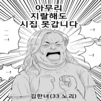
연기가 아님 · 11.28 02:48:55
ㅇㅇ · 11.28 02:49:51
ㅇㅇ · 11.28 02:49:55
ㅇㅇ · 11.28 02:49:59
ㅇㅇ · 11.28 02:50:03
ㅇㅇ · 11.28 02:52:08
ㅇㅇ · 11.28 02:52:09
ㅇㅇ · 11.28 02:56:38
히이잉 · 11.28 03:07:34
ㅇㅇ · 11.28 03:08:12
ㅇㅇ · 11.28 03:09:34
ㅇㅇ · 11.28 03:14:08
ㅇㅇ · 11.28 03:26:05
히이잉 · 11.28 03:27:12
ㅇㅇ · 11.28 03:31:50
ㅇㅇ · 11.28 03:32:10
히이잉 · 11.28 03:37:23
ㅇㅇ · 11.28 03:37:30
ㅇㅇ · 11.28 03:51:24
· ㅇㅇ · 11.28 04:00:09
· ㅇㅇ · 11.28 04:03:33
지열극나길자 · 11.28 03:53:52
ㅇㅇ · 11.28 03:55:17
ㅇㅇ · 11.28 04:13:45
ㅇㅇ · 11.28 04:18:39
· ㅇㅇ · 11.28 04:18:44
· ㅇㅇ · 11.28 05:32:26
· ㅇㅇ · 11.28 07:42:47
· ㅇㅇ · 11.28 08:40:27
ㅇㅇ · 11.28 04:26:50
· ㅇㅇ · 11.28 12:31:47
ㅇㅇ · 11.28 04:47:36
공장 · 11.28 04:54:12
형아어디가 · 11.28 05:00:39
· 형아어디가 · 11.28 05:01:05
· 형아어디가 · 11.28 05:01:08
· ㅇㅇ · 11.28 08:40:39
ㅇㅇ · 11.27 15:07:56
ㅇㅇ · 11.27 16:11:36
ㅇㅇ · 11.27 17:50:16
대갤러1 · 11.27 18:51:16
우리겨레2 · 11.27 20:24:44
크리스티아노 · 11.28 01:41:17
· 모코코- · 11.28 01:43:02
· 암타황제강시현 · 11.28 01:43:25
· ㅇㅇ · 11.28 01:50:16
楚覇王 項羽 · 11.28 01:41:44
· 암타황제강시현 · 11.28 01:43:28
· 楚覇王 項羽 · 11.28 01:44:44
· ㅇㅇ · 11.28 03:04:26
· 楚覇王 項羽 · 11.28 13:06:18
· ㅇㅇ · 11.28 17:46:36
· 楚覇王 項羽 · 11.28 19:34:48